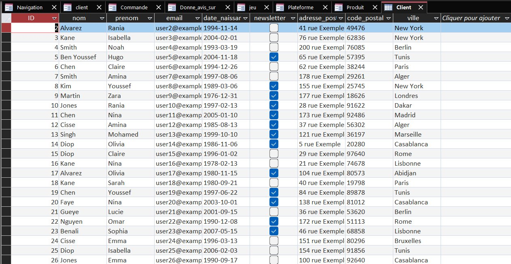

Conception & Implémentation d'une Base de Données

🔍 AgrandirCadre du projet & Objectifs
Conception complète d'une base de données relationnelle : de la modélisation conceptuelle (MCD) jusqu'à l'implémentation SQL et le peuplement avec des données réalistes répondant à un besoin métier précis.
Étapes de réalisation
Analyse & MCD
Identification des entités, relations et cardinalités depuis le cahier des charges. Conception du MCD respectant les formes normales.
MLD & implémentation SQL
Transformation en Modèle Logique, écriture des scripts DDL (CREATE TABLE, contraintes d'intégrité, clés primaires et étrangères).
Peuplement & tests
Insertion de données représentatives et requêtes SQL pour valider la cohérence et répondre aux besoins identifiés.
Ce que j'en retire
La normalisation : un investissement rentable
Bien normaliser la BDD dès le départ évite des heures de corrections lors de l'insertion. Une table mal structurée génère redondances et incohérences en cascade.
💡 Ce que j'ai retenu
Un modèle techniquement parfait mais qui ne correspond pas aux vraies contraintes métier est inutilisable en production. Comprendre le besoin prime sur la technique.
Positionnement par rapport aux ACs
| Apprentissage Critique | Statut | Commentaires |
|---|---|---|
| AC1.1.01 Interpréter correctement le besoin du commanditaire ou du client |
A | MCD produit en adéquation avec le cahier des charges, validé avant de passer à l'implémentation. |
| AC1.1.03 Connaître la syntaxe des langages et savoir l'utiliser |
P | DDL complet et fonctionnel, quelques optimisations sur les index auraient amélioré les performances. |
| AC1.1.04 Mesurer l'importance de maîtriser la structure des données à exploiter |
A | Normalisation jusqu'à la 3NF appliquée correctement, aucune redondance dans le modèle final. |